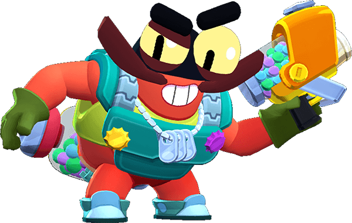

¿Quién es Clancy?
Para Clancy, no hay vuelta atrás (a menos que Hank se lo ordene). Ya no abandonará esta vida de falso crustáceo por nada del mundo; además, hará lo que sea por sus camaradas.
Clancy es un Brawler Mítico que tiene una salud moderada y un daño muy alto. Su atributo también le permite recolectar fichas y mejorar su ataque y súper durante una partida. Clancy ataca disparando balas y el patrón de ataque cambia según su fase. Con su súper, dispara muchos proyectiles en forma de cono, lo que aumenta en alcance y daño dependiendo de su fase actual.
|  |
NIVEL DE FUERZA 11 |
Sus gadgets
TESOROS DEL MAR: Clancy consigue el doble de fichas durante 5 segundos. |
RETIRADA TÁCTICA: Clancy avanza y recarga 1 de munición. |
Sus habilidades estelares
 |
INSPECCIÓN: Clancy empieza la partida con 3 ficha(s). |
 |
RECARGA A PRESIÓN: Clancy recarga por completo la munición cuando elimina un rival. |
 Braian Arancibia
Braian Arancibia Aya El Baarar
Aya El Baarar